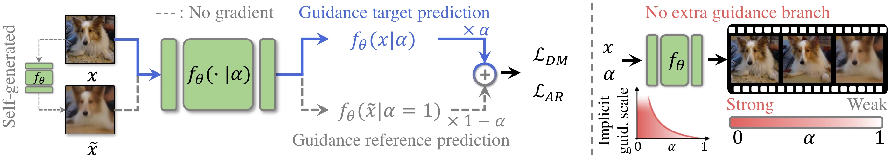
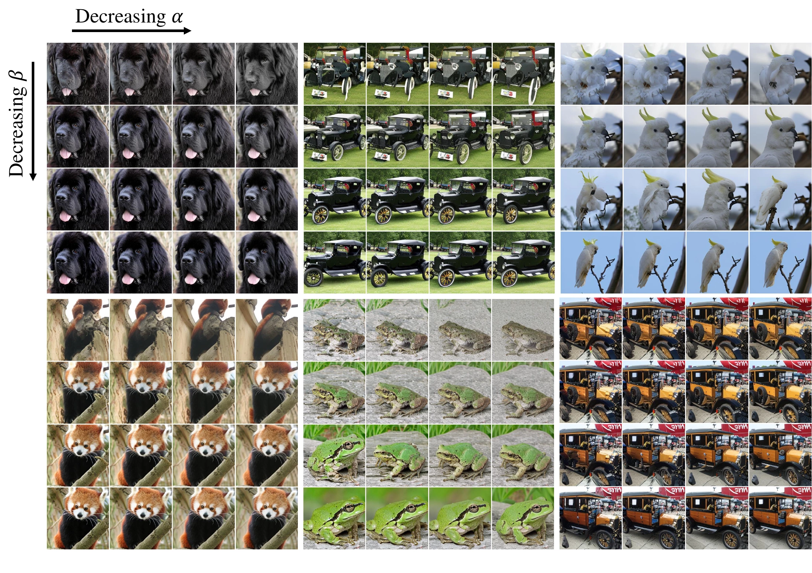
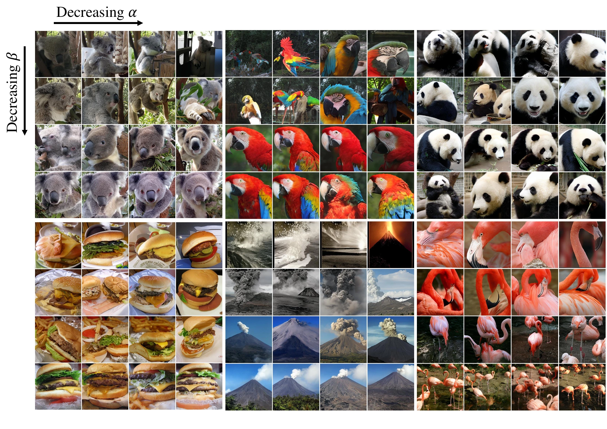

SCALE: Improving Guidance-Free Visual Generation via Self-Contrastive Alignment for Likelihood Estimation
KAIST, South Korea
NeurIPS 2026
TL;DR: SCALE learns from the contrast between real and self-generated samples to improve visual generation with one model evaluation per sampling step.
Guidance-Free Text-to-Image Generation
Compare SD1.5, GFT, and SCALE on the same prompts, with or without DPO.


Prompt: “a crowd of people watching fireworks”
Nine examples from Figures 5 and 11, at 512 × 512. All methods use guidance-free sampling. Click an image to enlarge.


Abstract
Classifier-free guidance (CFG) is essential for improving sample quality in visual generation, but it incurs substantial sampling overhead. Existing guidance-free approaches halve this cost by approximating the CFG with a single model inference, but their performance is bounded by the CFG and inherits its limitations. In this paper, we propose self-contrastive guidance (SCG), which contrasts the model’s prediction on real and self-generated samples to obtain a direct, model-based signal that pushes generation toward the true data manifold. Integrating SCG into the standard likelihood objective via reparameterization yields Self-Contrastive Alignment for Likelihood Estimation (SCALE), a guidance-free training framework that produces SCG-enhanced predictions in a single forward pass. Across class-conditional and text-to-image generation on diffusion and autoregressive models, SCALE consistently outperforms CFG-mimicking guidance-free baselines and improves further when combined with DPO, demonstrating that the self-contrastive signal yields gains complementary to both CFG and preference-based fine-tuning.
Method
SCALE incorporates self-contrastive guidance into likelihood training.

Self-contrastive guidance. The model constructs a self-generated sample paired with a real training sample. Contrasting its predictions on the two inputs provides a signal of its own prediction errors.
Guidance-free training and sampling. SCALE reparameterizes the likelihood objective to absorb this contrast into the model. At sampling time, a single model evaluation per step produces the enhanced prediction, with a conditioning parameter controlling the implicit guidance strength.
PatchMix. Mixing patches from real and self-generated samples provides a more reliable guidance anchor when generated samples are degraded. We use a mixing ratio of λ = 0.2 across our experiments.
Results
Class-Conditional Generation
SCALE improves guidance-free generation across diffusion and autoregressive models. On ImageNet 256 × 256, SCALE achieves FID-50k scores of 1.87 with DiT-XL/2 and 2.58 with LlamaGen-L.
| Model | Base | GFT | SCALE |
|---|---|---|---|
| DiT-XL/2 | 9.62 | 1.99 | 1.87 |
| LlamaGen-L | 19.0 | 2.88 | 2.58 |
Controllable Generation
Each grid below varies the implicit SCG strength (α, horizontally) and CFG strength (β, vertically). Click a figure to enlarge.




Complementary to Preference Fine-Tuning
SCALE also improves text-to-image generation with Stable Diffusion v1.5 and benefits further from DiffusionDPO. Explore the “With DPO” comparison above, or see the paper for the full metrics and human preference study.
News
- Our paper has been accepted to NeurIPS 2026!
- The project page and paper are available. Training and sampling code will be released soon in our GitHub repository.
BibTeX
@inproceedings{hur2026scale,
title = {Improving Guidance-Free Visual Generation via
Self-Contrastive Alignment for Likelihood Estimation},
author = {Hur, Jiwan and Lee, Dong-Jae and Lee, Dongyeun
and Han, Gyojin and Kim, Junmo},
booktitle = {Advances in Neural Information Processing Systems},
year = {2026},
url = {https://jiwanhur.github.io/SCALE/}
}